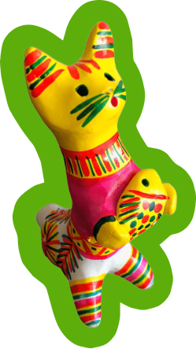
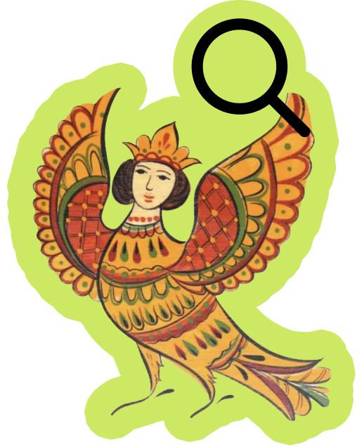
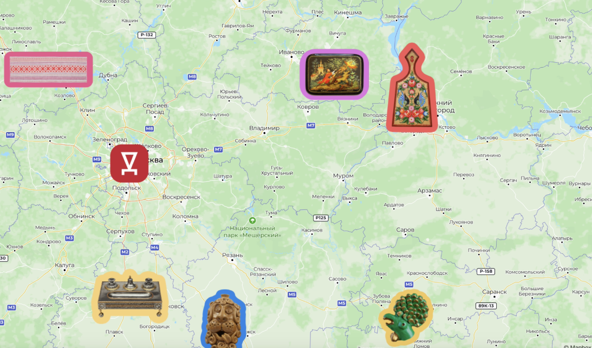
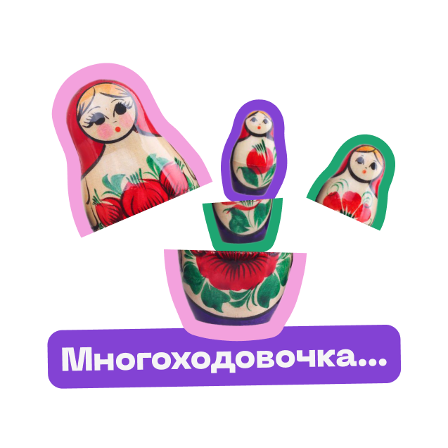
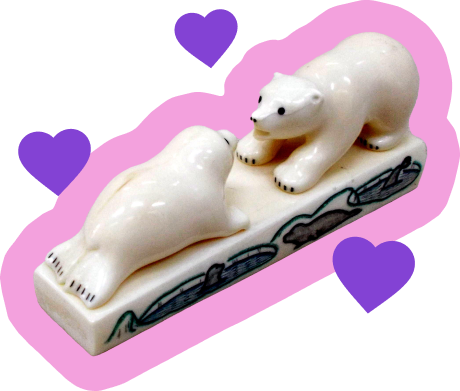

Ремесла России — это платформа для изучения народных ремесел со всей России с системой поиска и подборками
Используйте теги и выбирайте те статьи, которые вам интересны
Воспользуйся поиском, чтобы найти то самое ремесло
Чтобы было легко визуализировать, воспользуйся нашей картой
Читай интересные статьи, которые мы собрали
А чтобы было легче найти то или иное ремесло воспользуйся фильтрами

Мы долго думали, как интересно и современно рассказать про ремесла...
Затем появилась идея придумать « Ремёсла России»!
